한 문장 프롬프트로 시작해요
요즘 도형과 글자가 화려하게 움직이는 모션 그래픽 영상이 자주 보여요. 별도의 편집 툴이나 전문 기술로 만든 게 아니에요. 클로드한테 말로 부탁해서 코드로만 만든 영상이에요.
시작은 아주 단순한 한 문장이에요. 멋진 모션 디자이너라는 걸 보여 주는 15초짜리 쇼릴을 만들어 달라는 내용이죠. 발표자는 Claude Code에서 /effort로 effort를 Max까지 올린 뒤 이 문장을 그대로 넣었어요. 영어 원문 그대로 넣어도 되고, 한국어로 옮겨 넣어도 괜찮다고 해요.
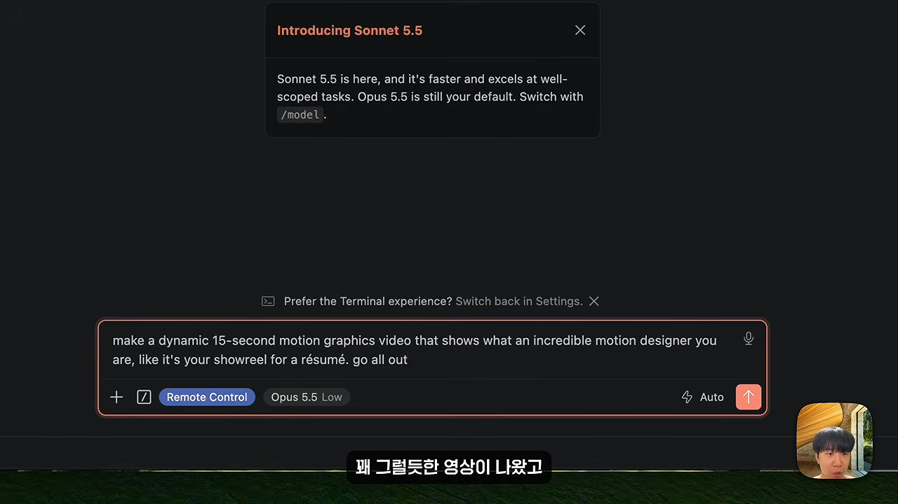
make a dynamic 15-second motion graphics video that shows what an incredible motion designer you are, like it's your showreel for a résumé. go all out
네가 얼마나 대단한 모션 디자이너인지 보여 주는 15초짜리 역동적인 모션 그래픽 영상을 만들어 줘. 이력서에 붙일 쇼릴처럼, 있는 힘껏.
— 영상 00:34 (화면에 띄운 프롬프트)
결과는 꽤 그럴듯했어요. 여러 도형이 리듬에 맞춰 움직이고, 배경 음악까지 알아서 붙었어요. 발표자는 원래 이런 영상을 Remotion이나 HyperFrames 같은 외부 툴을 깔고 여러 스킬을 붙여서 만들었어요. 이제는 그런 준비 없이 클로드 하나로 된다는 점을 짚어요.
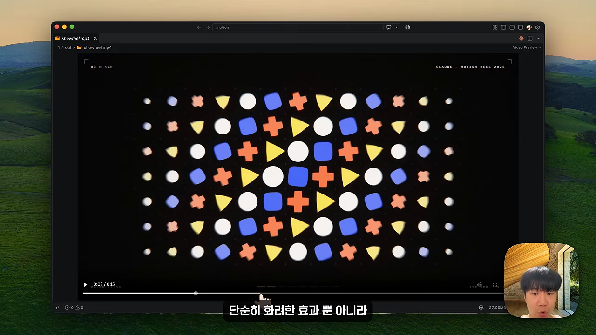
길고 구체적인 프롬프트는 뭐가 다를까요?
한 문장 프롬프트에는 분명한 한계가 있어요. 돌릴 때마다 결과가 달라지고, 보여 주기용으로는 멋지지만 내가 원한 영상은 아니에요. 발표자는 Anthropic이 Opus 5.5 사용법을 정리하면서 직접 밝힌 내용을 근거로 들어요. 디자인 방향을 따로 주지 않으면 Opus는 늘 쓰던 기본 스타일로 돌아간다는 거예요.
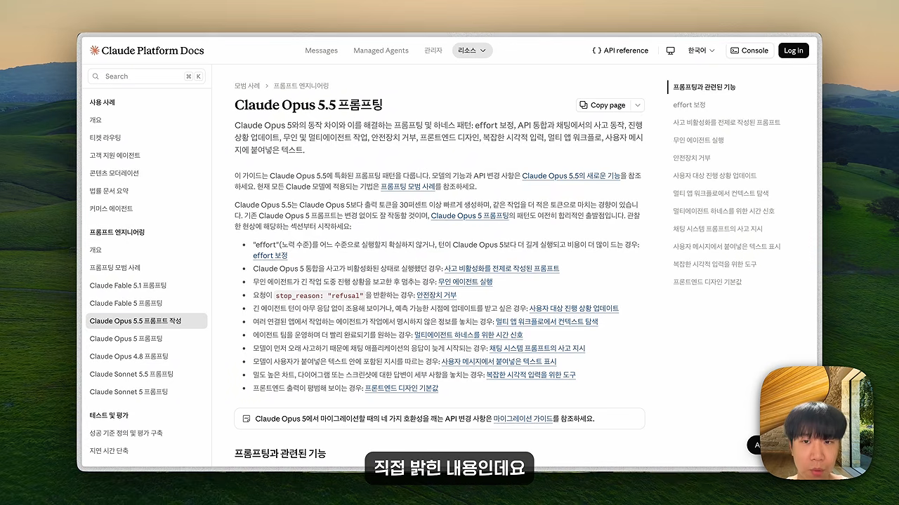
프롬프트를 네 칸으로 나눠요
두 번째 프롬프트는 한 문장이 아니라 훨씬 길어요. 화면에 보인 프롬프트는 태그로 칸을 나눠 두었어요.
| 칸 | 담는 내용 | 영상 속 예 |
|---|---|---|
<inputs> 재료 | 어떤 화면·색·음악을 쓸지. 클로드가 사용자에게 먼저 물어요 | 버튼, 슬라이더, 토글 같은 UI 상태 8~12개, 120 BPM 무료 음원 |
<direction> 연출 방향 | 영상의 느낌, 화면이 이어지는 방식, 금지 목록 | 도형 하나가 끊기지 않고 모핑, 웜그레이 배경, 흑백 컴포넌트 |
<structure> 장면 구조 | 박자별로 무엇이 일어나는지 | 120 BPM, 7마디. 버튼 → 로더 → 체크 → 음악 플레이어 → … → 다시 버튼 |
<build> 구현 | 어떻게 만들지에 대한 기술 지시 | HTML 파일 하나, 시간 함수로 스타일 계산, Playwright로 렌더링 |
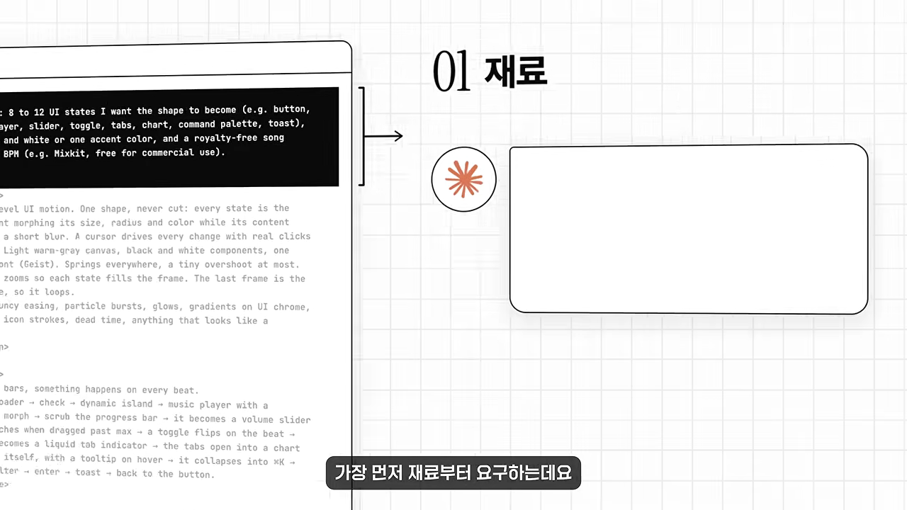
가장 중요한 칸은 연출 방향 안의 금지 목록이에요. 템플릿처럼 보이는 건 전부 쓰지 말라고 못 박아 둬요. 그 아래 구현 칸은 클로드가 읽을 부분이라 사람이 자세히 몰라도 괜찮아요.
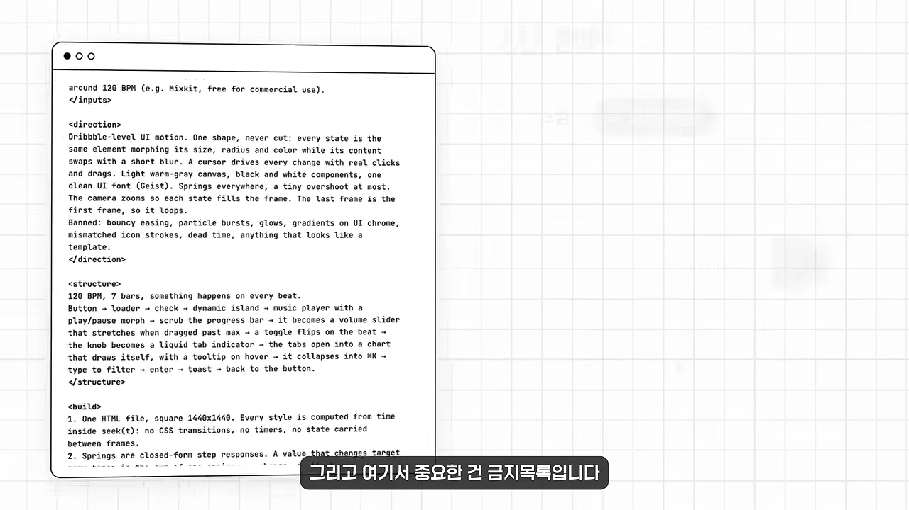
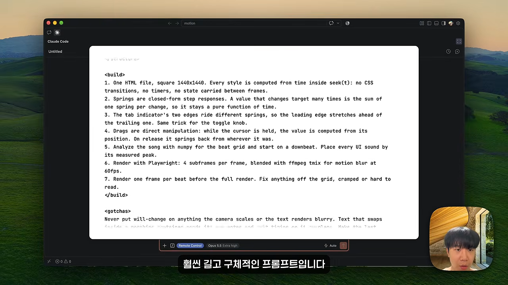
정리하면 한 문장 프롬프트는 클로드한테 알아서 해 보라고 맡기는 거예요. 이 프롬프트는 내가 원하는 걸 하나부터 열까지 알려 주는 거고요. 입맛에 맞게 고쳐서 다른 영상을 만들 수도 있어요.
| 한 문장 프롬프트 | 구조화된 프롬프트 | |
|---|---|---|
| 맡기는 범위 | 장면, 색, 음악 전부 클로드가 정해요 | 사람이 정하고 클로드는 옮겨요 |
| 진행 방식 | 바로 만들어요 | 재료를 묻고, 계획을 보여 준 뒤 만들어요 |
| 결과 | 돌릴 때마다 달라요 | 정한 화면이 정한 순서대로 움직여요 |
묻고, 계획을 보여 주고, 만들어요
발표자는 시간 관계상 effort를 Medium으로 돌렸어요. 그래도 되도록 Max로 돌리라고 권해요. 프롬프트를 넣자 클로드는 바로 만들지 않고 재료부터 물었어요. 화면은 예시 그대로, 색은 최소한으로, 음악은 알아서 골라 달라고 답했어요.
그다음에도 바로 코드를 짜지 않고 박자별 계획표를 먼저 보여 줬어요. 마음에 안 드는 장면은 이 단계에서 순서를 바꾸거나 빼면 돼요.
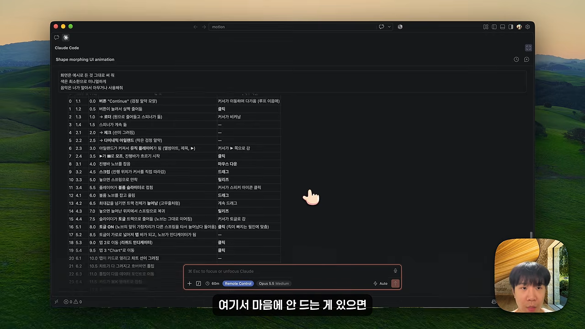
결과를 한 문장 버전과 비교하면 차이가 분명해요. 버튼, 음악 플레이어, 검색창이 정해 둔 순서대로 자연스럽게 이어져요.
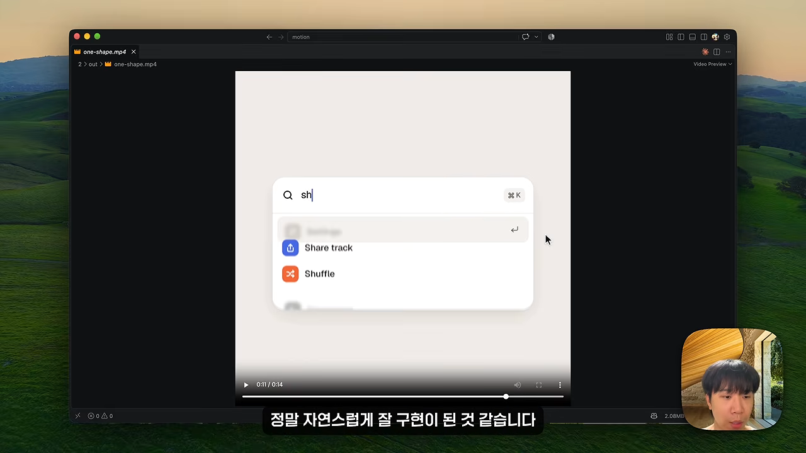
같은 구조로 애플 스타일 영상 만들기
한 단계 더 나아가 애플 스타일 영상을 만들어요. 전체 구조는 앞의 프롬프트와 같고, 요구 사항이 더 많아요. 장면 설명을 보면 원 하나가 사각형이 되고, 그리드로 펼쳐지고, 잠금 화면과 휴대폰과 Mac 창으로 계속 모핑돼요.
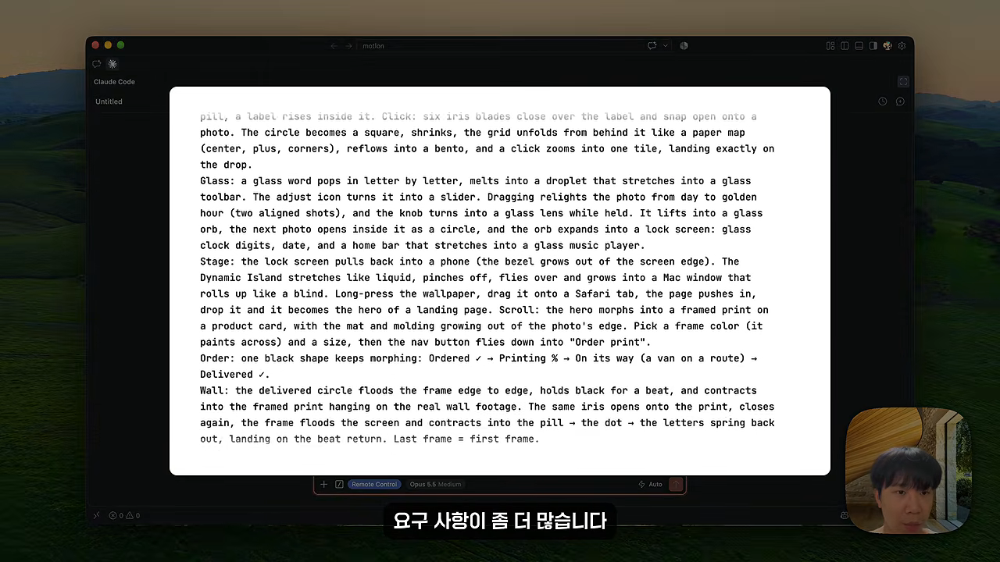
이번에도 클로드가 먼저 요청 사항을 물었어요. 브랜드 이름은 Slowlife로 정하고, 사진과 음악은 알아서 써 달라고 답했어요. 다른 툴을 연결하지 않았는데도 코드로 만들었다고는 믿기 어려운 품질이 나왔다는 게 발표자의 평가예요.
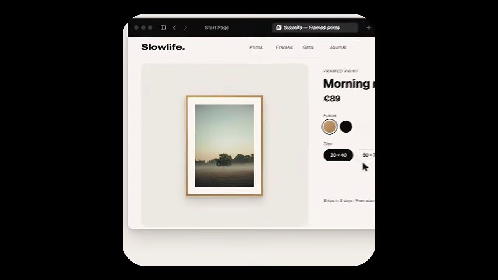
재료만 바꿔 내 채널 영상 만들기
마지막으로 앞의 프롬프트를 응용해 발표자 채널의 브랜드 영상을 만들어요. 프롬프트 구조는 그대로 두고 내용만 채널 이야기로 바꿨어요. 이름은 채널 이름인 Jay Choi로, 사진은 작업하는 모습으로, 배경 영상은 책상에서 일하는 클립으로 채웠어요.
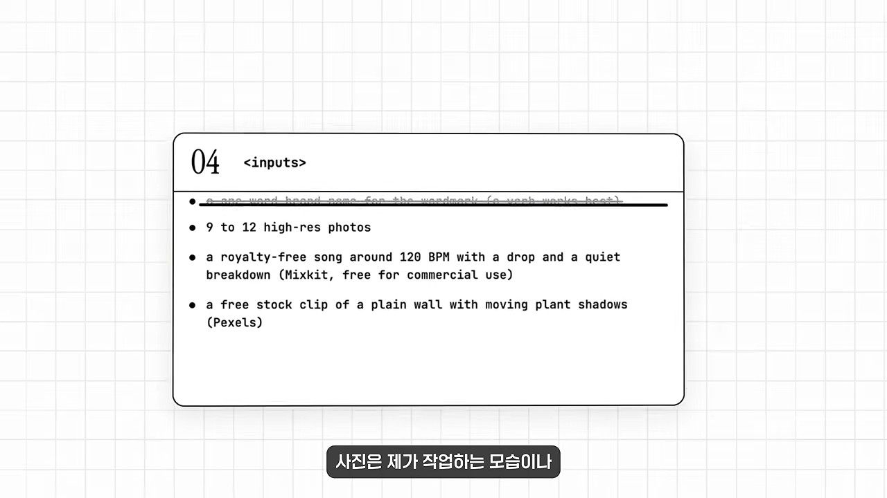
결과 영상은 작업 사진 그리드, 유리 질감의 터미널 창을 거쳐 휴대폰 속 유튜브 채널 화면으로 이어져요. 구조만 잘 잡혀 있으면 재료와 내용만 바꿔서 나만의 영상을 얼마든지 만들 수 있다는 게 이 구간의 요점이에요.
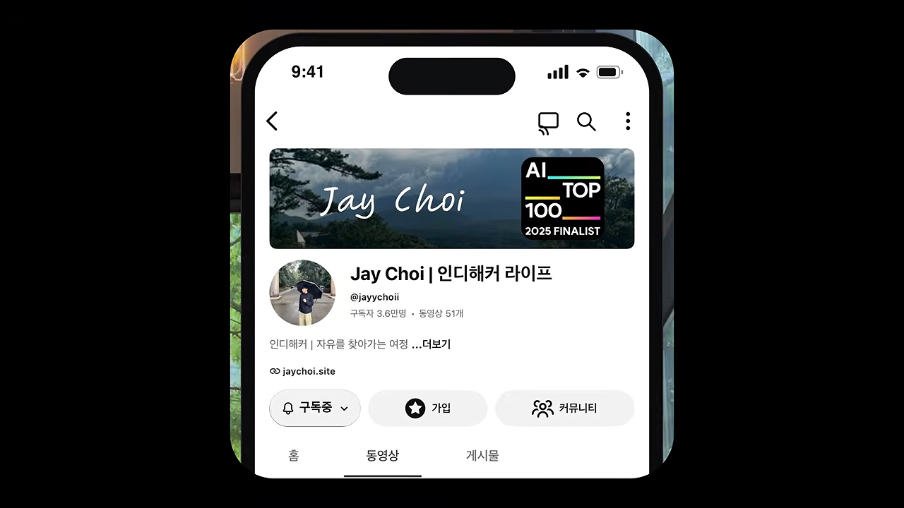
모션 디자인을 대체할까요?
네 가지 영상 모두 프롬프트를 붙여 넣어서 만들었어요. 그래도 어떤 장면을 넣을지, 박자마다 무엇이 일어날지, 어떤 효과를 금지할지는 모션 디자인을 알아야 내릴 수 있는 판단이에요. 클로드는 그 판단을 화면으로 옮겨 줄 뿐이에요.
저는 이게 모션 디자인을 대체한다기보다 도구를 다루는 문턱이 낮아진 것일 뿐이라 생각합니다.
— 영상 07:08
예전에는 머릿속에 좋은 그림이 있어도 만들 줄 몰라서 포기했어요. 이제는 그 그림을 하나씩 설명할 수만 있으면 돼요. 발표자는 한 문장 프롬프트로 가볍게 시작하고, 제대로 된 영상이 필요하면 구조화된 프롬프트를 고쳐 가며 원하는 방향으로 만들어 보라고 권해요.
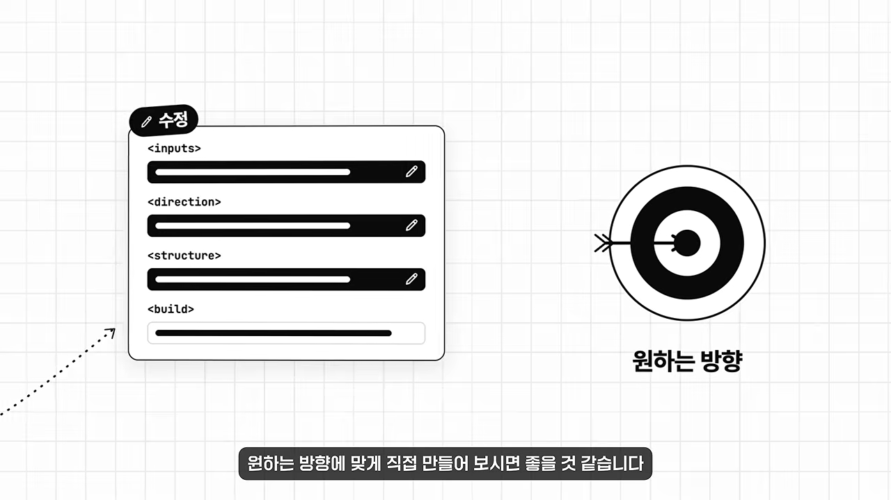
영상에 쓴 프롬프트는 모두 X에 공개된 오픈소스 템플릿이고, 발표자가 영상 설명란에 링크를 걸어 두겠다고 했어요.